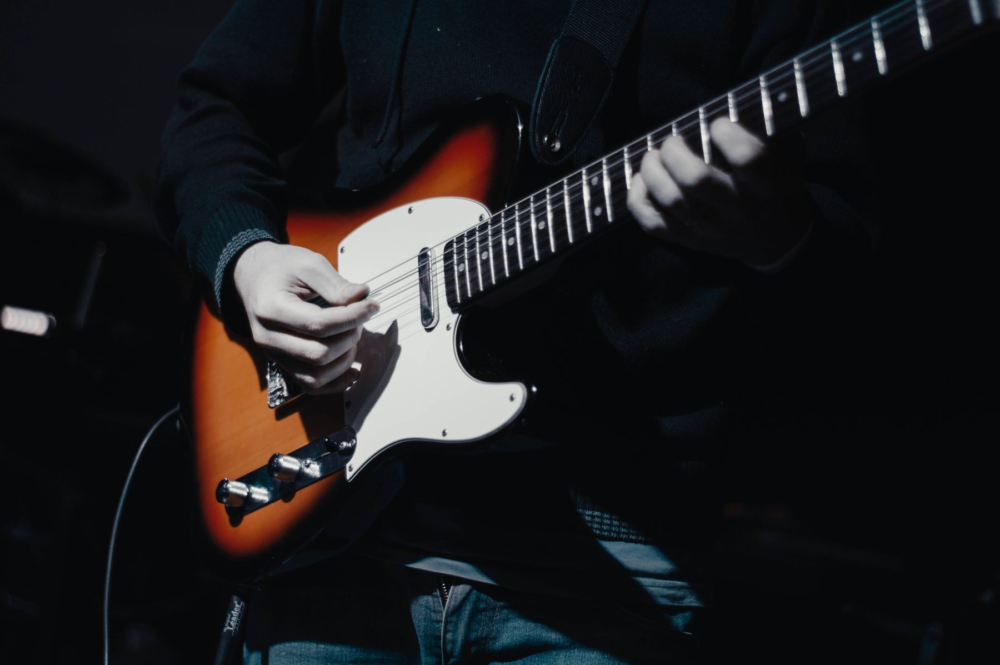
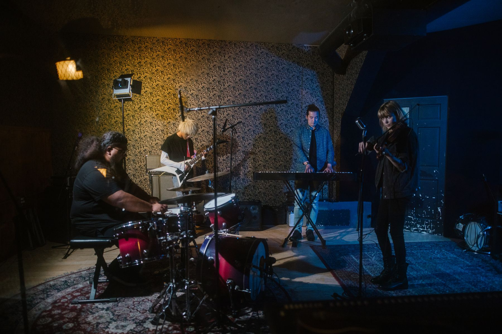
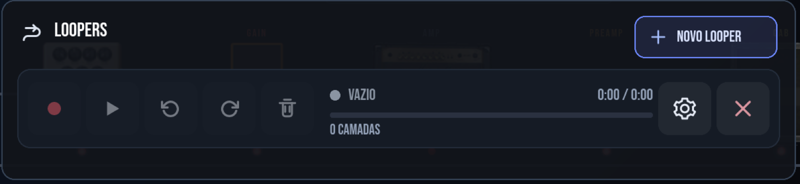
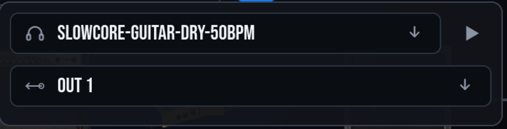
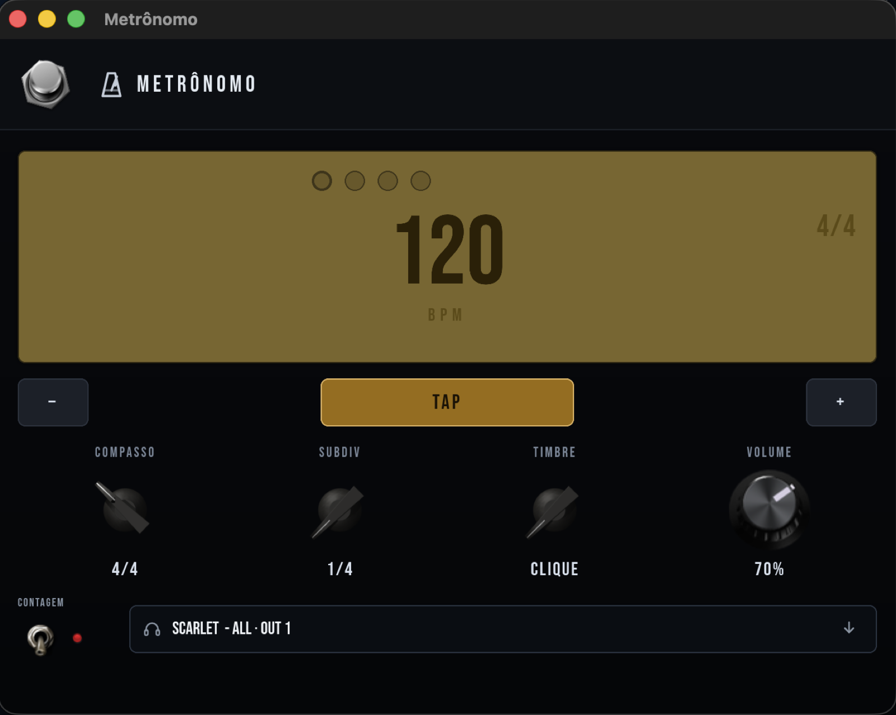
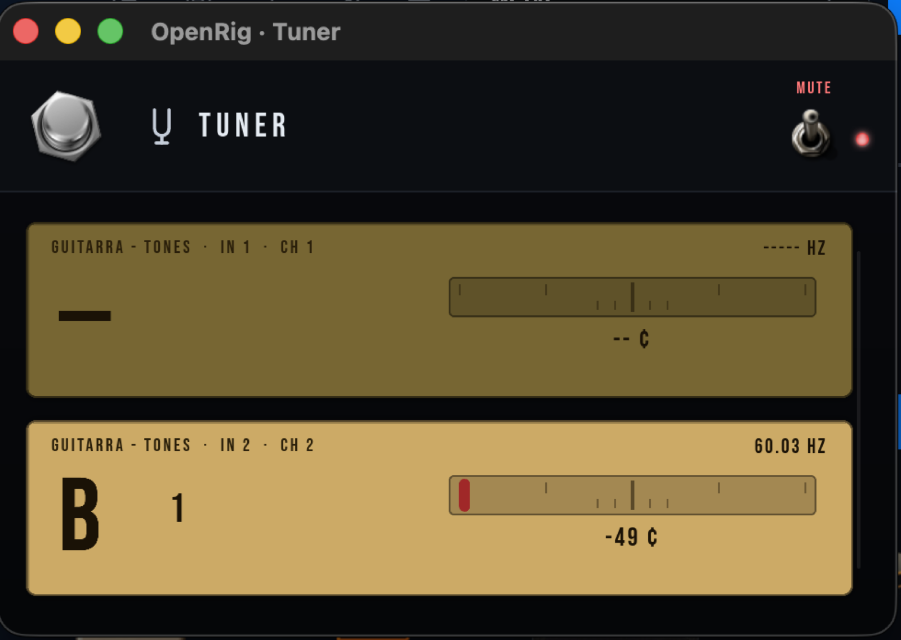
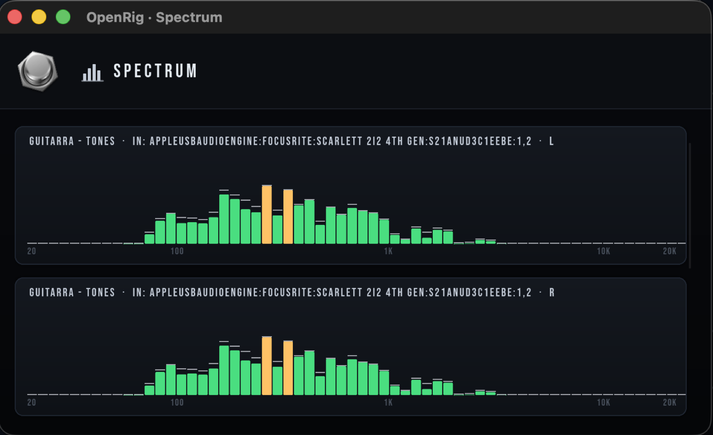
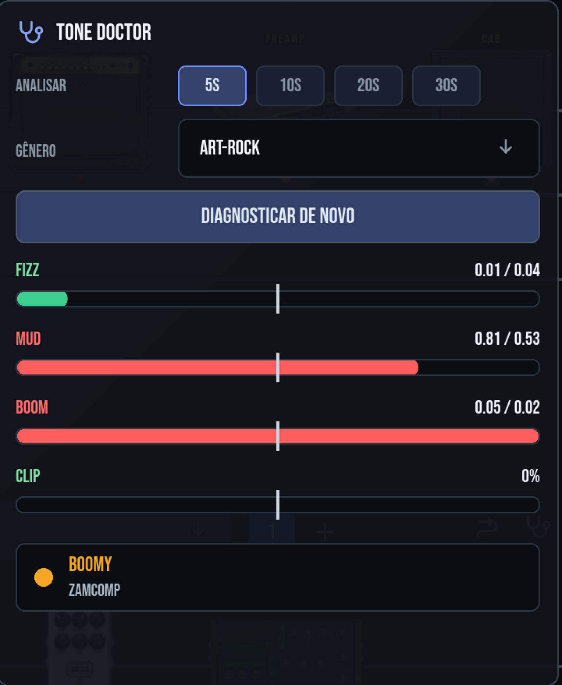

Free · Open source · Mac
Your amps.
Your pedals.
Your laptop.
Every amp you've chased, every cabinet you've mic'd, every pedal you've saved up for — playing back with the feel of the real thing. Plug in and go.
Scroll
Free · Open source · Mac
Every amp you've chased, every cabinet you've mic'd, every pedal you've saved up for — playing back with the feel of the real thing. Plug in and go.

Pick attack, bloom, the way a note sags when you dig in — that's what makes an amp yours. OpenRig captures it and hands it back, note for note, with no lag between your hands and the speaker.
Captures
A capture pack is dozens of files with the gain, the channel and the mic baked into the filename. Everywhere else you audition them one by one. OpenRig's plugins don't ship that list — we read the whole set, work out what actually changes between the files, and hand you those as knobs.
What you downloaded
Move the knob and the nearest capture loads underneath. It behaves like the amp, not like a file picker.
Built-in Rust DSP, neural amp captures, LV2 and VST3 plugins, impulse responses — OpenRig loads all five backends into the same rig, side by side.
Point it at your folder of .nam files or IRs and it builds the same knob panel around them.
The rig
No menus, no spreadsheets of parameters. The gear looks like gear, sits in a row like a pedalboard, and you reach for the knob you already know.

Drag a knob, hear it move. Every control responds the moment you touch it.
Drop pedals in front, cabinets behind, reorder anything by dragging it where it belongs.
Found the sound? Save the preset and it's still there at soundcheck next month.

Electric, acoustic and a vocal mic — each with its own rig, its own sound, its own outputs. Nobody bleeds into anybody. Add as many as your machine and your interface can carry.
Not only guitar
The shelf knows what it's for. Pick the instrument and OpenRig shows you the gear that belongs to it — nothing else.
Amps, cabs, drives, the whole board.
Body resonance, mic chain, space.
Mic chain, compression, space.
A generic rig for whatever the session throws at you.
Bass and keys rigs are next up.
Built for the gig
Rehearsal room, living room, or a stage with a click in your ears — the rig behaves the same way every night.
The signal goes in and comes back out fast enough that your hands never notice the computer in between.
Swap an amp, add a pedal, change a preset while you're playing. No gaps, no pops, no dead bars.
A laptop is plenty. It also runs on a small board you can screw to a pedalboard and forget about.
Everything you need
A looper, a tuner, a metronome, a spectrum analyzer, and a diagnostic ear built in — so you never have to leave the app to fix or check the tone.

Record a take, play it back, drop a new one on top. One take at a time, no undo maze.

Play a dry DI file through the live chain — every pedal and amp processes it exactly like your guitar. No hands needed to test a tone.

Tap tempo, time signature, subdivision, its own output. Keeps the whole band honest.

A chromatic tuner per input, muting the output while you tune.

Real-time frequency view per input, left and right, so you can see what you're playing.

Diagnoses fizz, mud and boom against a genre reference, and suggests the fix.
First on MCP
OpenRig ships its own MCP server — every command an AI needs to build, tweak and drive a rig, exposed the same way for the GUI, a footswitch, or Claude. Point Claude Code, Claude Desktop or Cursor at it and describe the tone you want in plain language.
"Timbre da Duality" — it researches the real signal chain, maps it to the catalog, and saves it as a new preset on your live rig.
Point it at your own .nam/IR captures or a tone3000.com pack and it packages a proper OpenRig plugin, manifest included.
Describe your foot controller, or hand it a MIDI capture, and it writes the profile — no factory support needed.
Install
Six skills, one plugin — see them all on GitHub.
Inside
Your instruments down the left, your gear in the middle, your outputs on the right. That's the whole app.

Get it
OpenRig is free and open source. Download it, open it, and start playing — nothing to sign up for, nothing to unlock later.
See what changed in this release